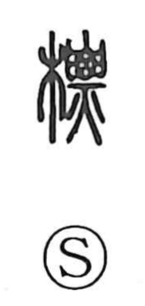

標

Uncategorized
Kun: shirushi, shirube | On: hyo
mark ・ sign ・ signpost ・ to set up
Explanation
A phono-semantic character formed with the tree element 木 and the phonetic 票 (hyo). In archaic form, 票 depicts a body held aloft and burning, made conspicuous by the force of the flames; the Shuowen also glosses it as the tip of a treetop. In 標, this idea of what stands out is applied to wood set upright so it can be seen—a treetop, pole, or post—hence the notion of an erected marker. From setting up a pillar as a signpost to using it to indicate or label, the character came to mean a mark or sign and, by extension, the act of putting one up.